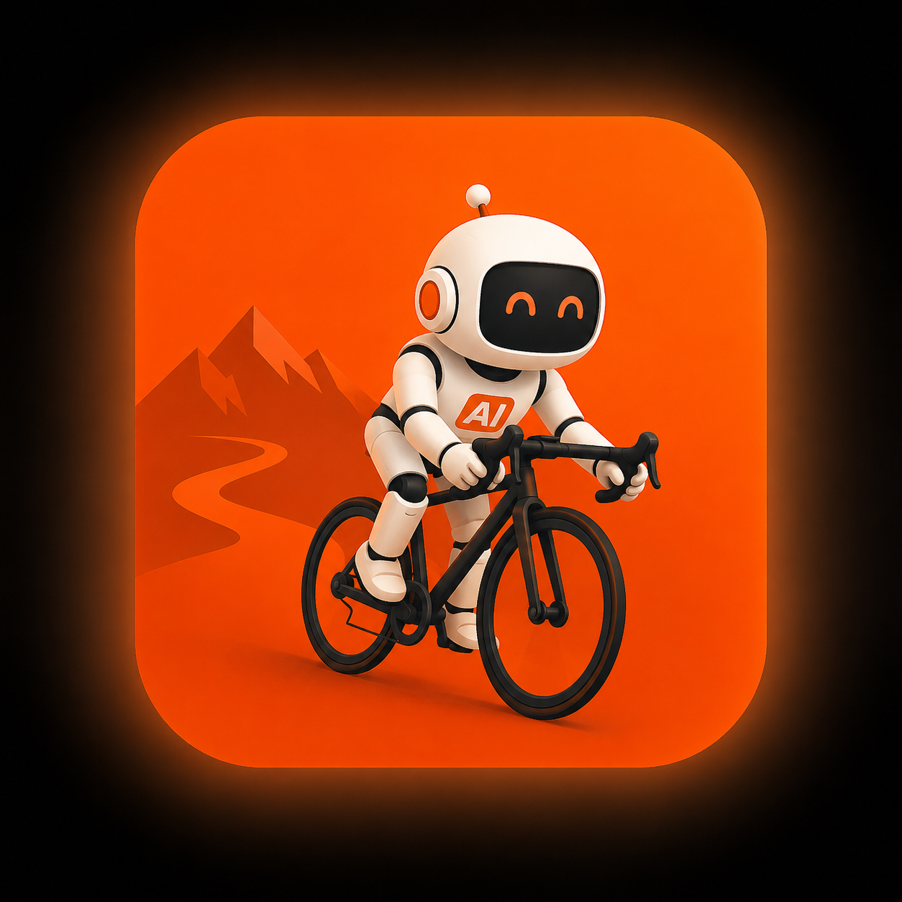

⚡ Projekt dyplomowy MOSTY AI 2026Asystent treningowy AI
Jak w 4 krokach zbudowałam działający prototyp AI
Marta Ptaszyńska | 18 maja 2026
MOSTY AI — metodologia wdrażania AI
Warsztat online Liderzy.AI, kwiecień–maj 2026. Cel: nauczyć się jak wdrażać AI w organizacji — procesowo, nie tylko technicznie.
Potrzebę i procesy
Rozwiązanie (PoC)
Wartość (PoV)
We wdrożenie (PoX)
Projekt dyplomowy — zadanie i wybór tematu
Wariant I
Rozszerzony prototyp systemu obsługi reklamacji (case study Home Style)
Wymagania min: karta procesu + prototyp
Wariant II
Własny proces biznesowy
Wymagania rozszerzone: karta procesu + kwestionariusz Excel + prototyp + dokumentacja
Hobby
Zapotrzebowanie własne
Just for fun
Co zbudowałam?
📋 Karta procesu
- Analiza SIPOC
- Macierz RACI
- Opis kroków procesu (STEP-001 do STEP-003)
- Punkt decyzyjny
- Ścieżki alternatywne i obsługa wyjątków
- KPI i miary operacyjne
- Analiza ryzyk
- Diagram procesu TO-BE (BPMN 2.0 w draw.io)
🤖 Prototyp aplikacji
- Stack: Python + Streamlit
- Integracja: Strava API + Gemini API
- Prompt engineering z guardrails
- Raport AI w 8 sekcjach
- Obsługa błędów i wyjątków
- Dostępna online
Jak działa asystent treningowy AI?
Dane dostępowe
Strava API + Gemini API Key
Pobierz dane
Historia aktywności z ostatnich 4 tygodni
Określ cel
Cel treningowy + liczba dni
Analiza AI
Gemini 2.5 Flash analizuje dane
Raport
8 sekcji + plan na 7 dni
Demo na żywo
▶ 2026mostyai-asystent-treningowy-ai.streamlit.app


Więcej niż chatbot
🧠 Procesy + AI
AI mapuje procesy, wykrywa problemy i projektuje usprawnienia — nie tylko pisze teksty.
📄 Dokumentacja z AI
Karty procesów, SIPOC, BPMN, wymagania generowane z rozmów, transkrypcji i materiałów źródłowych.
🤖 Agenci AI
Wyspecjalizowani agenci wspierający różne role — analityk, architekt, walidator, użytkownik.
📚 Wiedza firmowa w AI
Łączenie LLM z dokumentacją i procedurami organizacji, żeby odpowiedzi były konkretne i użyteczne.
🎥 Multimodalność
Praca z PDF, obrazami i nagraniami wideo — np. analiza procesu na podstawie rozmowy z biznesem.
🛡️ Guardrails i ewaluacja
Jak ograniczać halucynacje, testować jakość odpowiedzi i budować rozwiązania AI przewidywalnie.
Co dalej z projektem — T z MOSTY
Projekt pokazał że AI można wdrażać iteracyjnie — małymi krokami, z procesem, bez wielkiego budżetu.
Co mi dało MOSTY AI?
🗺️ Myślenie procesowe
Wypełnienie karty procesu zmusiło mnie do przemyślenia rzeczy, które przy samym kodowaniu bym pominęła.
🚀 Niski próg wejścia
Nie trzeba być developerem żeby zacząć. Im bardziej się zagłębiasz — tym bardziej rozszerzają się perspektywy.
🔁 Iteracyjność
Prompt engineering to nie jednorazowy strzał. Każda iteracja zmniejszała halucynacje i poprawiała jakość rekomendacji.
🤖 Przekrój zastosowań AI
Od agenta zasilanego wiedzą szkoleniową, przez generowanie BPMN/PlantUML, po mapowanie procesu z nagrania wideo.
Metodologia MOSTY sprawdza się nie tylko w dużych wdrożeniach — działa też dla małych PoC i projektów hobbystycznych.